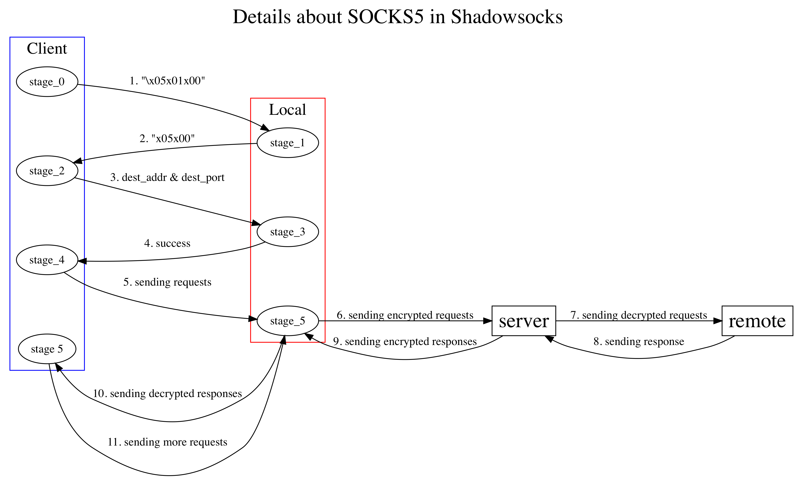
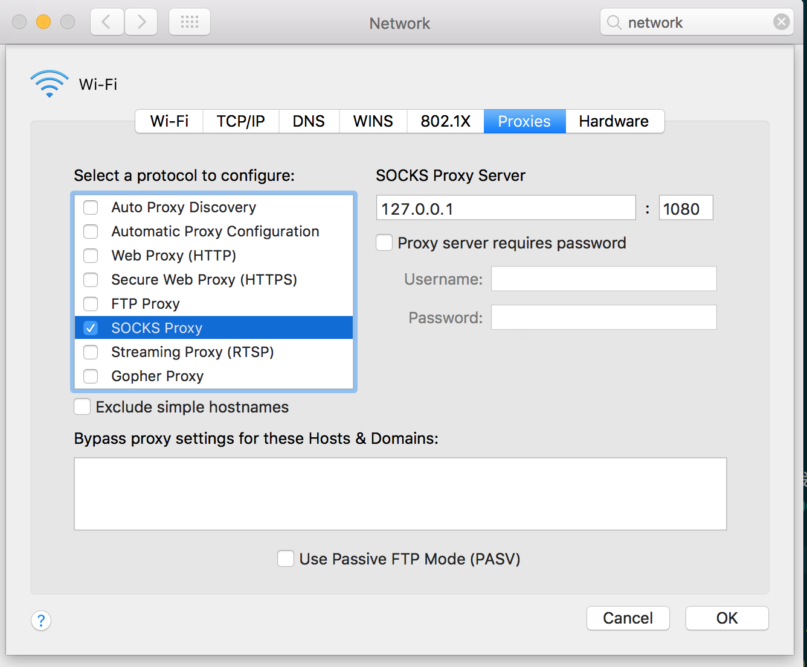
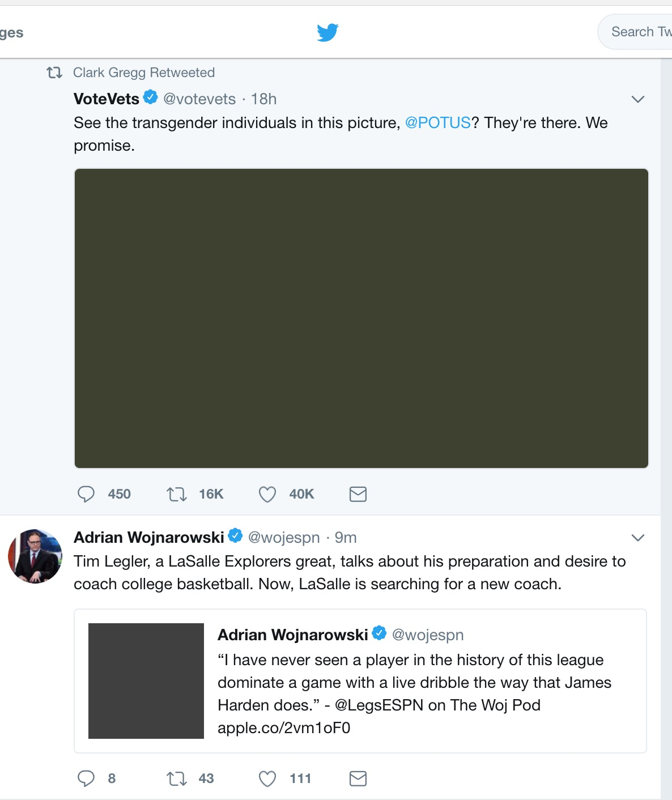

Mar 21, 2018
You believe whatever you want Floyd, but I am telling you these walls are funny. First you hate ’em, then you get used to ’em. Enough time passes, gets so you depend on them. That’s institutionalized. They send you here for life, that’s exactly what they take. The part that counts, anyway.
Scope: Shadowsocks的原理, Shadowsocks的简易实现
眼看本科生涯就要结束了，觉得自己还有很多想做的事都没有做，其中两件就是学一下Ruby和写一个代理。个人认为学会了Python和Racket之后，再学Ruby在语言层面上并不会有什么太大的收获，不过bonus就是可以顺便学学Ruby on Rails，一个非常不错的Web框架。我想学Ruby纯粹是因为Ruby的名字好听加上logo好看，再加上看了官方的教程Ruby in Twenty Minutes之后，觉得Ruby颇有些loosely-knit的味道，适合写代码时放飞自我。对于墙的问题，我就不想再对此评论什么了，作为一个独立的个体，我会贡献出我的价值，以此来表达我的观点。希望6月回国之后可以用上自己写的代理 :)
GFW的主要手段有DNS污染和TCP协议关键字审查，Shadowsocks的应对方式也很简单，找一台不受GFW所限制的机器作为中介。主要流程如下：
对于DNS污染，中介机器在墙外，不受墙内的DNS污染影响；对于TCP协议关键字审查，ss_local与ss_server之间的流量是加密的，所以墙也无法审查。当然这两个都是老手段了，墙还有很多其他的招式，比如开某会期间，直接实行封端口的策略，导致一时间好多人将443端口作为ss_server的端口来使用。封端口策略是一种非常愚蠢又极端的手段，设想所有服务器只被允许开放特定端口，那么服务器的服务就只能被部署在这几个特定端口上，这下好了，黑客想拿你的站直接连扫端口这一步也省了 :）
本实现使用以下配置：
Shadowsocks使用的是SOCKS5代理协议，其具体细节在RFC1928中被定义。SOCKS5协议中的client可以看作是计算机发出的网络请求，server就是ss_local。二者之间首先要进行握手以及认证，从而建立连接，具体过程如下图所示：

上图中的stage_0 - stage_2属于建立SOCKS5握手阶段，此时计算机会默认向1080端口发出请求“\x05\x01\x00”进行SOCKS5连接的消息，该消息由三部分组成：
监听在1080端口的ss_local，即SOCKS5服务器收到该消息后会回复“\x05\x00”，该消息由两部分组成：
具体代码如下：
class Local
def initialize()
@utils = Utils.new
@config = @utils.config
@local_port = @config['local_port']
@local = TCPServer.new(@local_port) # Listen
...
end
def run()
loop { # Servers run forever
@client = @local.accept
# Receive
# +----+----------+----------+
# |VER | NMETHODS | METHODS |
# +----+----------+----------+
# | 1 | 1 | 1 to 255 |
# +----+----------+----------+
ver = @client.read(1) # VER
if ver != "\x05"
@client.close
end
n_methods = @client.read(1) # NMETHODS
methods = @client.read(n_methods.ord) # METHODS
# Send
# +----+--------+
# |VER | METHOD |
# +----+--------+
# | 1 | 1 |
# +----+--------+
data = "\x05\x00"
@client.write data
...
}握手阶段结束后是stage_2 - stage_4，此时计算机会向1080端口发出请求细节，此处我们使用“\x05\x01\x00\x03\x0e + b’www.google.com’ + \x01\xbb”，该请求由以下几部分组成：
监听在1080端口的ss_local，即SOCKS5服务器收到该消息后需要做两件事：
1. 将需要访问的地址与端口加密后发送到ss_server
2. 回复“\x05\x00\x00\x01\x00\x00\x00\x00\x00\x00”到计算机，该消息由以下几部分组成：
class Local
def initialize()
...
@utils.init_cipher(@config['encrypt-method'])
@server_addr = @config['server']
@server_port = @config['server_port']
@server = TCPSocket.open(@server_addr, @server_port)
...
end
def run()
loop {
...
# Receive
# +----+-----+-------+------+----------+----------+
# |VER | CMD | RSV | ATYP | DST.ADDR | DST.PORT |
# +----+-----+-------+------+----------+----------+
# | 1 | 1 | X'00' | 1 | Variable | 2 |
# +----+-----+-------+------+----------+----------+
ver = @client.read(1)
if ver != "\x05"
@client.close
end
# o CMD
# o CONNECT X'01'
# o BIND X'02'
# o UDP ASSOCIATE X'03'
cmd = @client.read(1)
rsv = @client.read(1)
# o ATYP address type of following address
# o IP V4 address: X'01' - 4 bytes
# o DOMAINNAME: X'03' - the first byte stands for length
# o IP V6 address: X'04' - 16 bytes
atyp = @client.read(1)
msg = atyp
if atyp == "\x01"
dst_addr = @client.read(4)
msg += dst_addr
elsif atyp == "\x03"
len = @client.read(1)
dst_addr = @client.read(len.ord)
msg += len + dst_addr
elsif atyp == "\x04"
dst_addr = @client.read(16)
msg += dst_addr
end
dst_port = @client.read(2)
msg += dst_port
@server.write @utils.encrypt(msg)
# Send
# +----+-----+-------+------+----------+----------+
# |VER | REP | RSV | ATYP | BND.ADDR | BND.PORT |
# +----+-----+-------+------+----------+----------+
# | 1 | 1 | X'00' | 1 | Variable | 2 |
# +----+-----+-------+------+----------+----------+
data = "\x05" + "\x00" + "\x00" + "\x01" + "\x00\x00\x00\x00" + "\x00\x00"
@client.write data
...
}至此，SOCKS5连接已经建立完毕。
SOCKS5连接建立完毕之后，剩下的就只有ss_local与ss_server之间的TCP转发及加解密问题了。
ss_local连接ss_server的过程非常简单：从config.json里读出server的地址及端口，直接一个TCP连接连过去就ok了。
class Local
def initialize()
@server_addr = @config['server']
@server_port = @config['server_port']
@server = TCPSocket.open(@server_addr, @server_port)
...
end
def run()
loop {
...
handle_tcp(@client, @server)
}
...
end之前说到过ss_local将需要访问的地址与端口加密后发送到ss_server，同样的，ss_server收到地址和域名后，直接一个TCP连接连过去。
class Server
def run()
...
@remote = TCPSocket.open(target_addr, target_port)
handle_tcp(@client, @server)
end
end至此client、ss_local、ss_server三者已经连接在了一起。目前的问题在于，ss_local如何将收到的requests转发给ss_server？ss_server又如何将收到的responses转发给ss_local？我们只要实现一个TCP转发函数handle_tcp(source, destination)即可。注意ss_local与ss_server的handle_tcp函数的实现都是相同的，因为它们需要做的事情是一样的，即将收到的TCP数据转发到另一端。该函数的核心在于判断何时该从socket中读数据，何时从socket中写数据，这个任务可以通过调用select函数来完成，select函数会返回ready for reading/writing的sockets。如果某一socket is ready for reading了，那就读取这个socket中的数据并写入到另一个socket中，这样一来就实现了TCP的转发。当然，在读／写的时候，不能忘记对流量进行解密／加密，否则会被墙检查到流量中的关键字，轻则重置连接，重则封锁墙外服务器的ip。
select(read_array [, write_array [, error_array [, timeout]]]) → array or nil
Calls select(2) system call. It monitors given arrays of IO objects, waits one or more of IO objects ready for reading, are ready for writing, and have pending exceptions respectably, and returns an array that contains arrays of those IO objects. It will return nil if optional timeout value is given and no IO object is ready in timeout seconds.
$blockSize = 1024 * 100
def handle_tcp(src, dest)
loop {
ready = select([src, dest], nil, nil)
puts ready[0]
if ready[0].include? src
# src -> dest
data = src.recv($blockSize)
if data.empty?
puts "src end closed connection"
break
end
data = @utils.encrypt(data)
dest.write(data)
end
if ready[0].include? dest
# dest -> src
data = dest.recv($blockSize)
if data.empty?
puts "dest end closed connection"
break
end
data = @utils.decrypt(data)
src.write(data)
end
}
end在调试程序的过程中，需要一个SOCKS5客户端，我们可以自己写一个客户端，向ss_local端口（1080）发送指定消息，也可以将本机的代理设置为SOCKS5。macOS下可以进入
System Preference -> Network -> Advanced -> Proxies -> SOCKS Proxy进行相应更改。

调试完成之后，就可以投入使用了。在本机上运行local.rb，并将server.rb放到墙外的服务器上运行，打开本机的SOCKS代理就可以使用浏览器访问不存在的网站了，也可以使用命令行进行测试
curl --socks5-hostname 127.0.0.1:1080 https://google.com/
记得把config.json中的ip地址改为墙外服务器的地址并确保端口信息正确，good luck!
用单线程的版本的Shadowsocks访问Twitter，却发现所有图片都无法加载…

client、ss_local、ss_server三者是通过socket来通信的，而socket往往由一个三元组来表示[协议，地址，端口]。显然，一个线程一次只能访问一个socket，一个socket只能表示一个三元组，而大多数网站资源的来源都不止一个（如网站会使用CDN加速），所以单线程的ss就只能获取到网站的部分资源。这也是上图中Twitter图片无法加载的原因：Twitter的文字来自twitter.com，而图片却来自pbs.twimg.com，ss唯一的线程一直在访问twitter.com，当然就无法获取图片资源了。单线程还会导致软件效率低下，因为CPU资源会被缓慢的网络传输及I/O所浪费。
多线程的改写在Ruby中较为简单，直接用Thread.new或者Thread.start创建线程即可，当CPU空闲时改线程会自动运行，无需手动启动线程。新建线程时会用到有趣的Ruby block，要运行的线程代码会被作为block传给线程。
ss_local可改为：
class Local
def initialize()
...
@port = @config['local_port']
@local = TCPServer.new(@port) # Listen
end
def run()
loop {
Thread.start (@local.accept) {|client| thread_run(client)} # Ruby block
}
end
def thread_run(client)
# SOCKS5 handshake
# SOCKS5 request/reply
handle_tcp(client, server)
break;
end
...
end类似的，ss_server可改为：
class Server
def initialize()
...
@server_port = @config['server_port']
@server = TCPServer.new(@server_port)
end
def run()
loop {
Thread.start (@server.accept) {|local| thread_run(local)} # Ruby block
}
end
def thread_run(client)
...
remote = TCPSocket.open(target_addr, target_port)
handle_tcp(local, remote)
break;
end
...
end// TODO
// TODO
本文源代码可在此处下载
[Return to the homepage]I have no idea to this day what those two Italian ladies were singing about. Truth is, I don’t want to know. Some things are better left unsaid. I’d like to think they were singing about something so beautiful, it can’t expressed in words, and it makes your heart ache because of it. I tell you, those voices soared higher and farther than anybody in a grey place dares to dream. It was as if some beautiful bird had flapped into our drab little cage and made these walls dissolve away, and for the briefest of moments, every last man in Shawshank felt free.